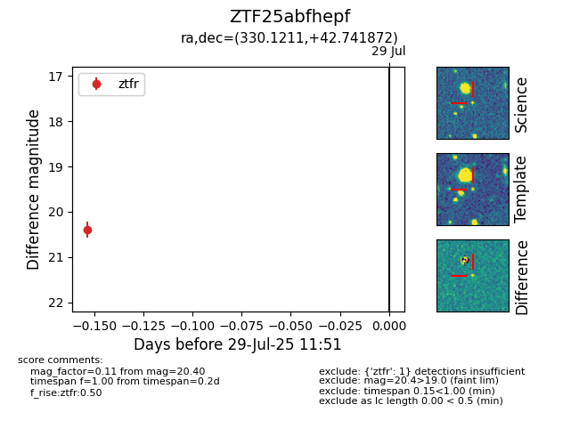

Target ZTF25abfhepf at 2025-07-29 11:51, see:
FINK: fink-portal.org/ZTF25abfhepf
Lasair: lasair-ztf.lsst.ac.uk/objects/ZTF25abfhepf
ALeRCE: alerce.online/object/ZTF25abfhepf
alt names
ZTF25abfhepf (ztf,fink)
coordinates:
equatorial (ra, dec) = (330.1211,+42.74187)
galactic (l, b) = (92.5455,-9.82190)
photometry
last ztfr=20.40
1 ztfr detections
